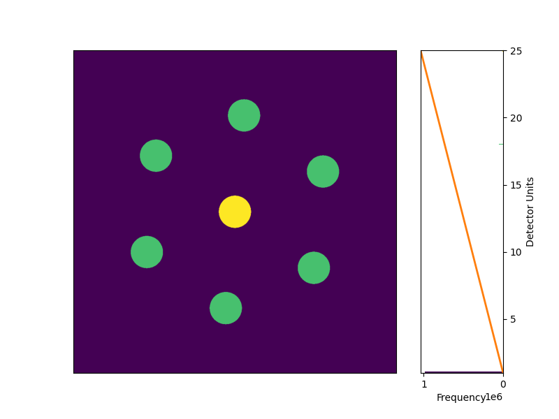
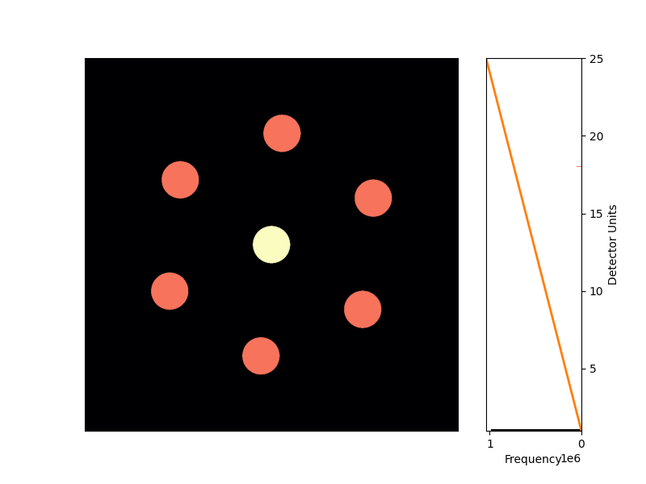

Note
Go to the end to download the full example code.
The get_result Function#
The get_result function is the main entry point to access results while an acquisition is running, and after it has finished. The function can be slightly confusing at first but this tutorial hopefully helps to simplify and clarify its usage and show how powerful the function is and how you can leverage it to build fast/responsive visualization tools.
The simplest usage of get_result is to get the most recently acquired frame.
from deapi import Client
from deapi import ContrastStretchType
import time
import sys
client = Client()
if not sys.platform.startswith("win"):
client.usingMmf = (
False # True if on same machine as DE Server and a Windows machine
)
client.connect(port=13240) # connect to the running DE Server
Command Version: 15
Get A Single Diffraction Pattern#
We will acquire a single image. By default, this is the Raw image that is acquired from the camera.
print("Acquiring a single diffraction pattern...")
client.scan(enable="Off") # Disable scanning
client.start_acquisition(1)
# wait for the acquisition to finish
while client.acquiring:
time.sleep(1)
print("Acquisition finished.")
img = client.get_result("singleframe_integrated")
img.plot()

Acquiring a single diffraction pattern...
Acquisition finished.
<Axes: >
Advanced Usage of get_result#
Many times, for display you might want to resize the image, apply a contrast stretch, etc. These are costly operations and doing them on the client side can be slow. If you are operating over a network connection, sending large images reduces the responsiveness of your application. The get_result function has a number of parameters that allow you to do these operations on the server side, and only send the final result to the client. This can greatly improve the responsiveness of your application.
img = client.get_result(
"singleframe_integrated", window_width=128, window_height=128 # resize to 128x128
)
img.plot()

<Axes: >
We can also apply a contrast stretch on the server side. This is much faster than sending the raw image to the client and doing the contrast stretch there.
img = client.get_result(
"singleframe_integrated",
window_width=128, # resize to 128x128
window_height=128,
stretch_type=ContrastStretchType.DIFFRACTION,
)
img.plot()

<Axes: >
You’ll notice that the image is now contrast stretched. The histogram continues to show the full range of the data, with the color map imposed on histogram bins. you can also change the color map.
img = client.get_result(
"singleframe_integrated",
window_width=128, # resize to 128x128
window_height=128,
stretch_type=ContrastStretchType.HIGHCONTRAST,
)
img.plot(
cmap="magma",
)

<Axes: >
Total running time of the script: (0 minutes 2.058 seconds)